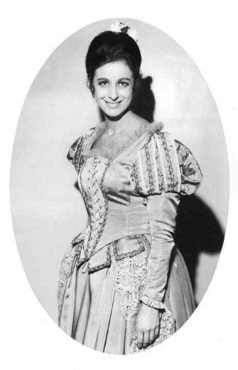

В совсем ещё юном возрасте Николетта Панни (Nicoletta Panni) закончила с отличием Консерваторию Св. Чечилии (Conservatorio di S. Cecilia, Accademia Nazionale di Santa Cecilia), одерживая в скором времени победу на различных вокальных конкурсах: Международный конкурс исполнителей в Женеве в Виктория-холл (Concours International d'execution musicale di Ginevra al Victoria hall); Конкурс в Экспериментальном театре оперы Сполето (Il Concorso allo Sperimentale di Spoleto); две стипендии, назначенные E.n.a.l. (сокр. от Ente nazionale assistenza lavoratori, Национальное бюро по организации досуга трудящихся) в Муниципальном театре Болоньи (due borse di studio indette dall'E.n.a.l. al Teatro comunale di Bologna); конкурс Верчелли и конкурс в Национальном союзе музыкантов (Il concorso di Vercelli e quello del Sindacato nazionale Musicisti). Николетта Панни дебютировала в театре в Сполето в 1953 году с «Секретом Сусанны» Вольфа-Феррари, впоследствии посвятив себя камерной вокальной музыке с маэстро Джорджио Favaretto, а затем вернулась на театральные подмостки в Театр Верди в Триест в 1957 году, чтобы исполнить главную роль Бланш де Ла Форс в опере Ф. Пуленка «Диалоги кармелиток». Карьера Николетты Панни, в театре и в концертах продолжалась около двадцати лет. После этого длительного периода больших успехов артистка посвятила себя концертам, а затем преподавательской деятельности в музыкальных консерваториях и Частной академии. Николетта Панни умерла 12 сентября 2017 года. На официальном сайте имеется надпись "Con profonda tristezza comunico che Nicoletta Panni é salita al cielo il 12 settembre 2017" (С глубокой печалью сообщаю вам, что Николетта Пании вознеслась на небо 12 сентября 2017 года).